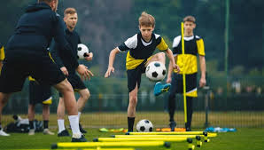

FUTBOL
El futbol se caracteriza por ser un deporte de equipo, jugado entre dos conjuntos de once jugadores cada uno, con el objetivo de marcar goles en la porteria cotraria.
El futbol es un deporte unico en varios aspectos, aqui te menciono unos:
- Populridad global: Es el deporte mas popular del mundo, con aproxidamente 270 millones de jugadores en el todo el planeta.
- Simplicidad y accesibilidad: solo se necesita una pelota para jugar, lo que lo hace accesible para personas de todas las edades y condiciones socioeconomicas.
- Pasion y emocion: El futbol es un deporte que genera una gran cantidad de pasion y emocion en los aficionados, lo que hace unico en comparacioncon otros deportes.